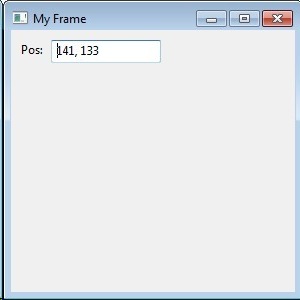

#!/bin/env python
import wx
class MyFrame(wx.Frame):
def __init__(self):
wx.Frame.__init__(self, None, -1, "My Frame", size=(300, 300))
panel = wx.Panel(self, -1)
panel.Bind(wx.EVT_MOTION, self.OnMove)
wx.StaticText(panel, -1, "Pos:", pos=(10, 12))
self.posCtrl = wx.TextCtrl(panel, -1, "", pos=(40, 10))
def OnMove(self, event):
pos = event.GetPosition()
self.posCtrl.SetValue("%s, %s" % (pos.x, pos.y))
if __name__ == '__main__':
app = wx.PySimpleApp()
frame = MyFrame()
frame.Show(True)
app.MainLoop()
if __name__ == '__main__':
app = MyApp(False)
app.MainLoop()